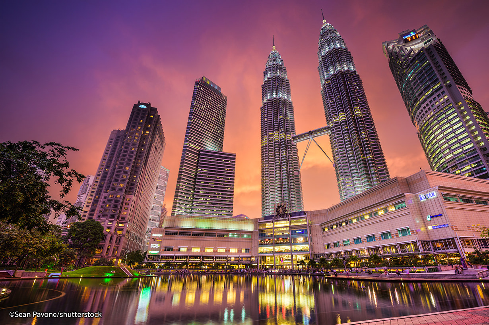
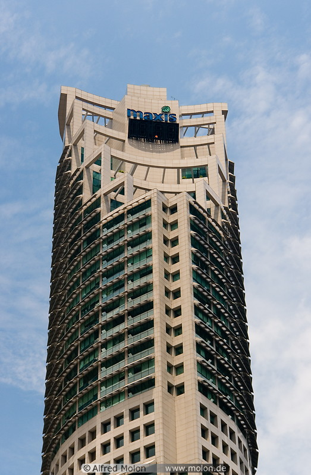

From Wikipedia, the free encyclopedia
Kuala Lumpur Convention Centre (KLCC) is a multipurpose development area in Kuala Lumpur, Malaysia. The area is located around Jalan Ampang, Jalan P. Ramlee, Jalan Binjai, Jalan Kia Peng and Jalan Pinang. There are a number of shopping complexes such as Suria KLCC and Avenue K. There are also hotels within walking distance such as G Tower, Mandarin Oriental, Grand Hyatt Kuala Lumpur and InterContinental Kuala Lumpur hotel.
Designed to be a city within a city, the 100-acre site hosts the tallest twin buildings in the world, a shopping mall, office buildings and several hotels. A public park and a mosque have also been built in the area and open to everyone. The whole project is cooled via district cooling located on the property.
The site of the Kuala Lumpur City Centre was historically part of an affluent suburban residential area north of the old Kuala Lumpur town, linked to the town via Ampang Road and populated by bungalows and mansions dating as far back as the colonial early-20th century. The centrepiece of the area was the original site of the Selangor Turf Club,[1] with many houses constructed around the site to capitalise on views of the racing course. As large scale development moved northwards from old Kuala Lumpur town after the 1950s, development of the area gradually shifted from low-density residential homes to high-density commercial complexes and offices, raising the appeal of developing the suburb into a new commercial centre for Kuala Lumpur. In 1988, the Selangor Turf Club site and adjoining residential parcels were sold to be cleared away for the KLCC project; the Turf Club was subsequently relocated to Serdang. In the subsequent years after the relocation of the Turf Club, more surrounding residential plots were acquired for further development of the KLCC.
Constructed between 1993 and 1998, the Petronas Twin Towers were the tallest buildings in the world from 1 January 1998 to 31 December 2004. Currently, it still holds the record for the tallest twin buildings in the world. It is the headquarters of Petronas, a Fortune 100 state-owned oil company and also the largest company in Southeast Asia.
The towers and the mall below were designed by Argentinian born architect César Pelli. Construction started in 1991 and was completed 7 years later, in the midst of Asian Financial Crisis and Reformasi movement. Due to the soil conditions of the site, the buildings were built on one of the deepest foundations in the world. The Building Services engineer contractor was Flack + Kurtz which is currently part of the WSP | Parsons Brinkerhoff Company.
Maxis Tower (Malay: Menara Maxis) is a 49-storey, 212 m (696 ft) office skyscraper in Kuala Lumpur City Centre, Kuala Lumpur, Malaysia. The tower serves as headquarters of Maxis Communications and Tanjong Plc Group of Companies.
Maxis Tower was developed by KLCC Properties Holdings Berhad (KLCCP) under Phase 1 of the KLCC project. The building is owned by Impian Klasik Sdn Bhd, in which Tanjong holds a 67% stake and KLCCP holds a 33% stake.[4][5] Maxis Tower is situated in the northwest corner of the KLCC development, adjacent to the Petronas Twin Towers. As with its neighbouring twin towers, Maxis Tower features an aluminium and glass cladding facade 